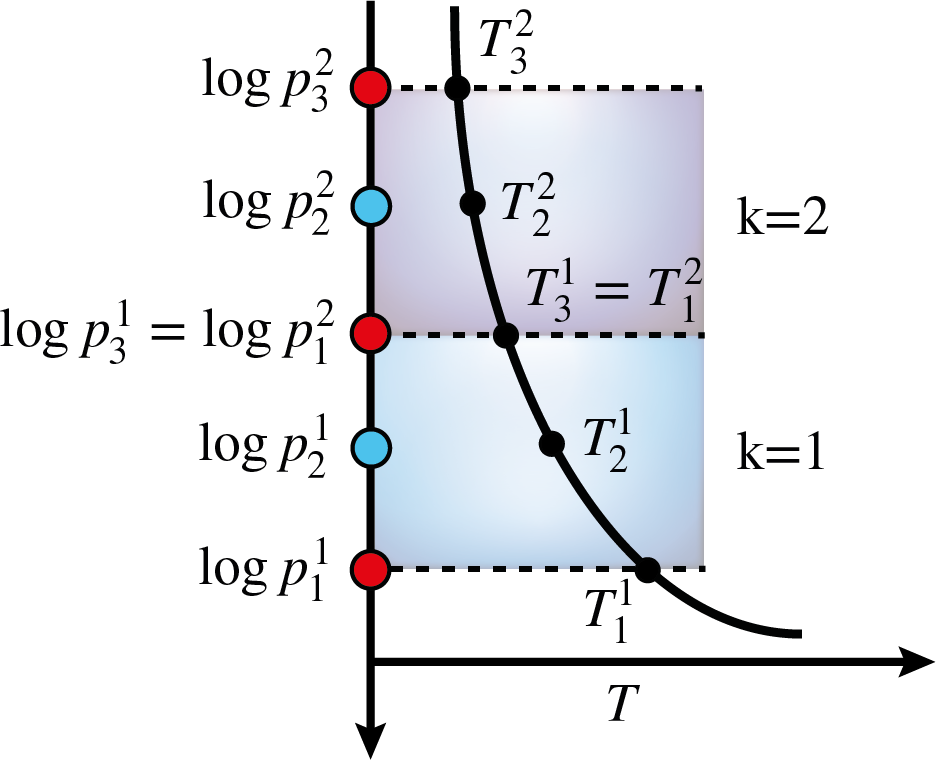
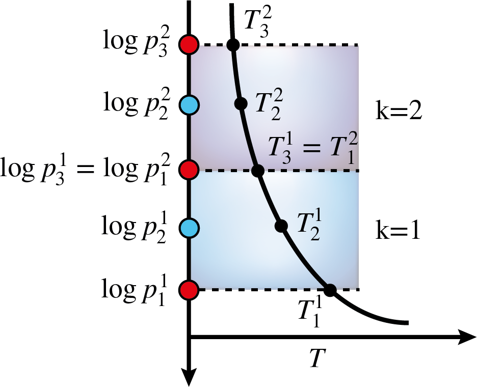

Chemistry Models¶
BeAR currently includes the following chemistry models:
equilibrium chemistry
isoprofiles
piecewise polynomial
cubic b splines
Isoprofile¶
Isoprofiles are the most simple but also often used approximation for parametrising the chemical composition. In this approximation, the abundance of a chemical species is assumed to be constant throughout the atmosphere. This yields one free parameter for each chemical species included in the retrieval.
In the corresponding forward_model.config of the chosen forward model,
the isoprofile chemistry model is chosen by setting
Piecewise polynomial¶
 

Cubic b splines¶
Cubic b splines are very similiar to the piecewise polynomial model, in the sense that they approximate the The difference between the two descriptions is that cubic b splines also have continous first and second derivatives. This leads to the abundance profiles being very smooth. It should be noted, though, that a more smooth profile is not necessarily more correct

{kind=link}